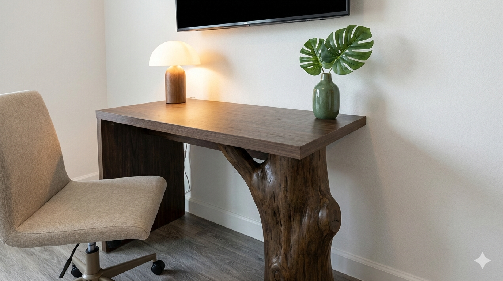
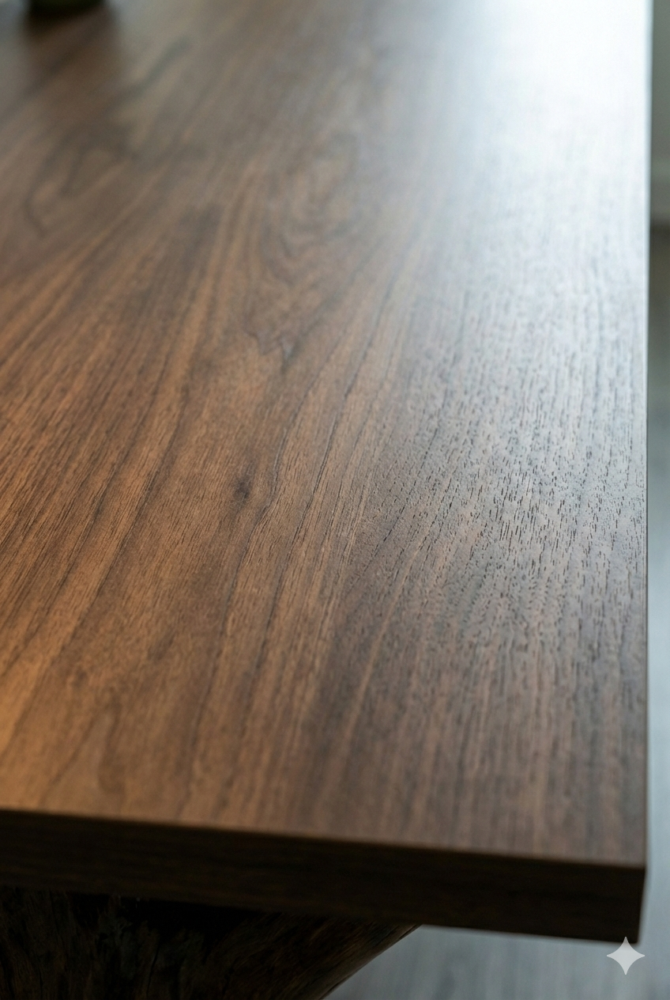
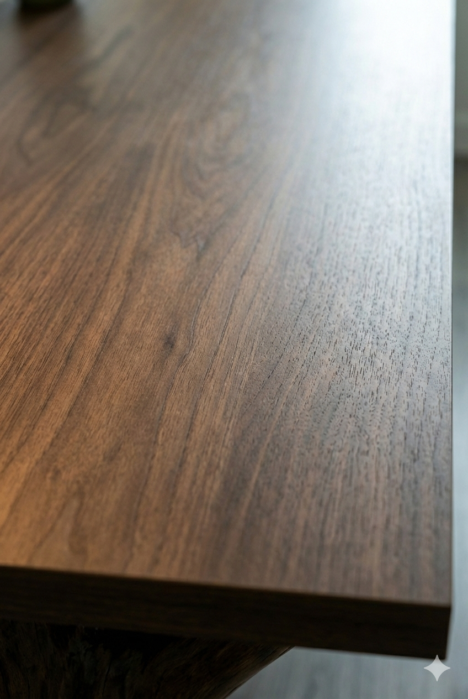

Table
Why
During WFH due to Covid, I started more space in he cabinet. I'd liked to invest from Sam garage repair to make a small wood shop. My first project was a dining table for my roommates and I, so my meals at.
What
This is an 8X3 live edge redwood dining table with a natural varnish oil finish.
I hope that this table echoes the one day.
How
I purchased the slab of wood from a local saw mill in the Santa Cruz mountains. The Inyo saw mill had been swallowed by an LA based conglomerate. The entire project was completed with patience and electric hand tools in my garage.
The process video recorded one he hours on TikTok.

 
